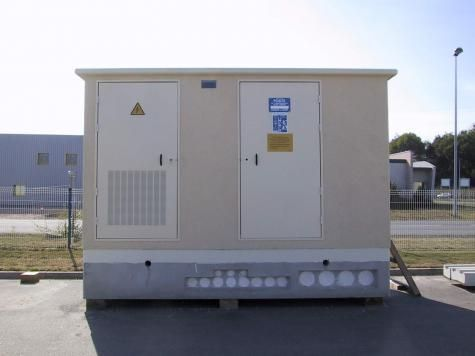
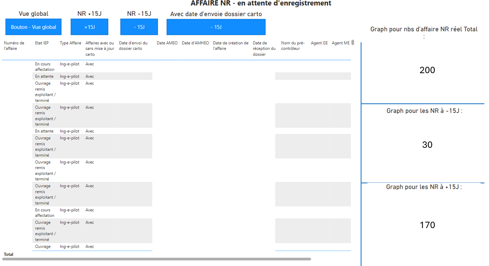
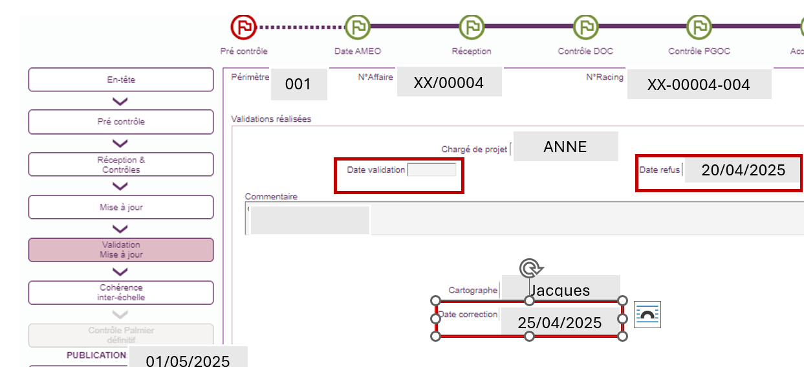
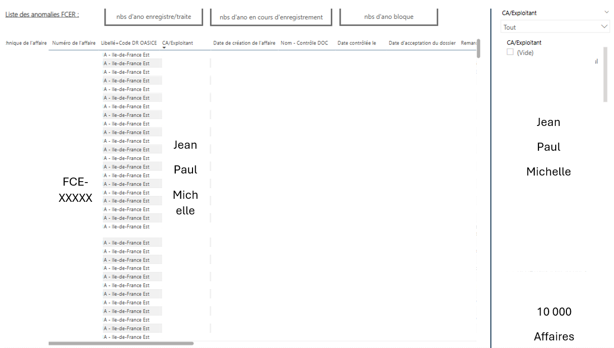
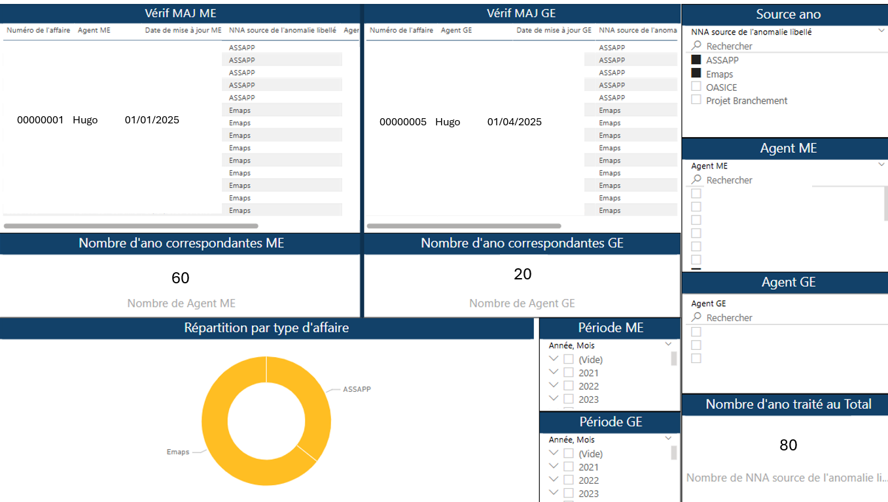
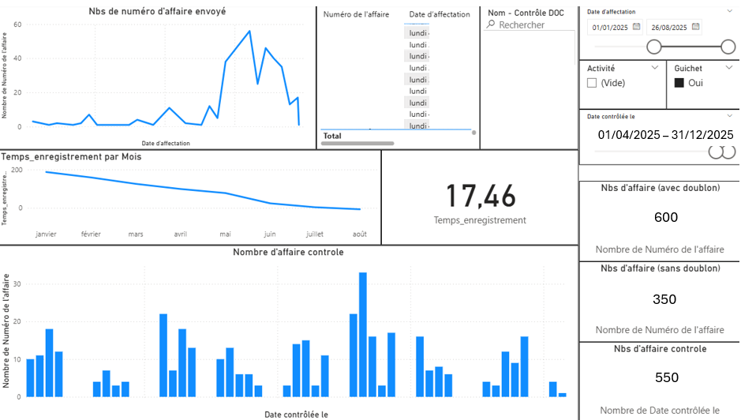
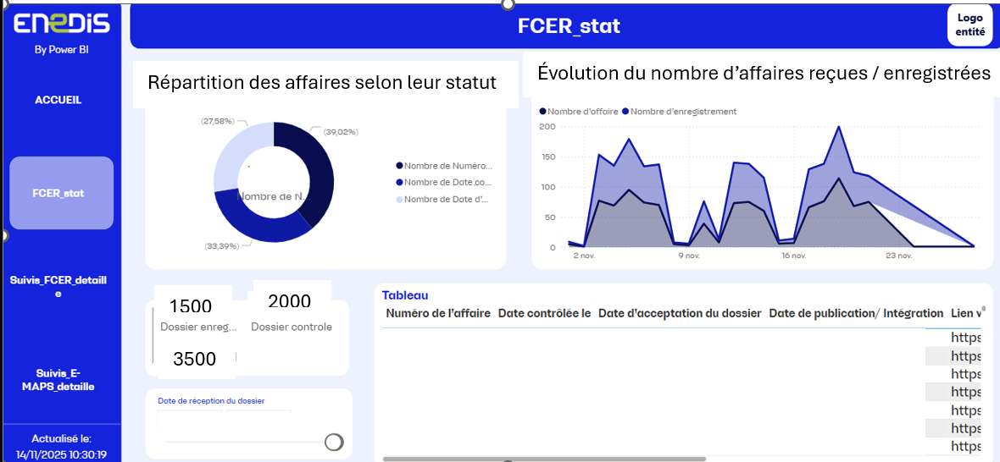
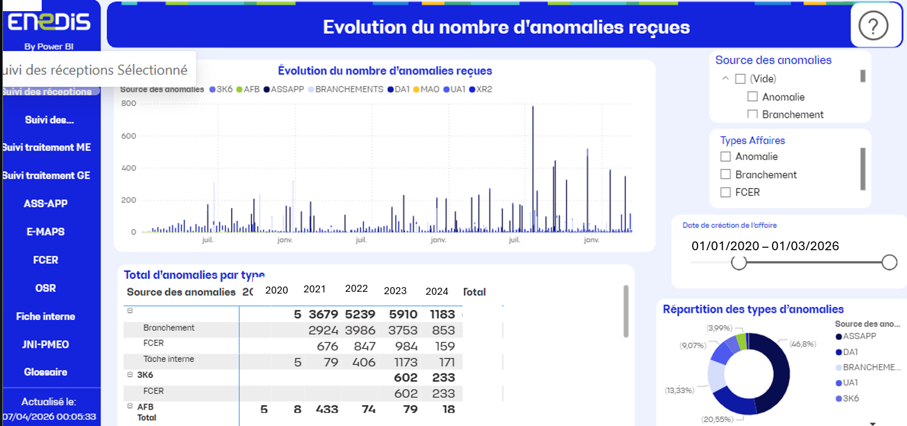
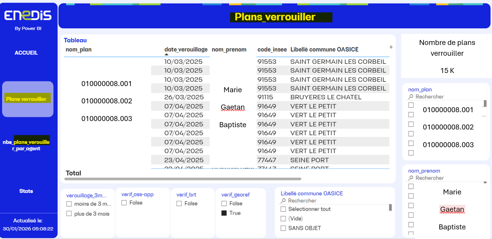
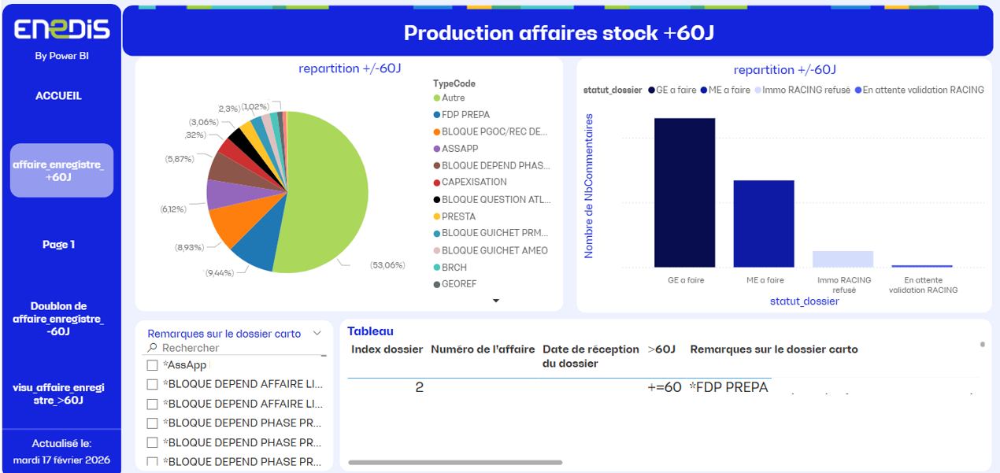

Export de boîte sous-troittoir de Vincennes
Connaître les boîtes souterraines présentes dans la commune ainsi que leurs fonctions
Voir le détail
Suite à la demande de l’AODE de Vincennes, il était souhaité de connaître le type, le nombre et la fonction des boîtes souterraines présentes sur la commune
Voir la documentation PDF Vue GSA Voir la requête
Mise à jour des types de postes électriques
Voir détails
« Réalisation d’une mise à jour massive des différents types de postes en défaut, visant à corriger les incohérences détectées
Voir la documentation PDF Requête Résultat import
Reporting sur les dossier carto ayant une date d'envoie
Voir détails
Connaitre le nombre de dossier ainsi que le détail des affaires considérées comme "Non-recue" ainsi que si le délais entre la date du jour et la date renseigné est < ou > à 15J Ces informations permettent de pilote l'activité Guichet et de savoir si besoin de relance CP ou non ?
Voir la documentation PDF Vue PBI Visuel du stockage des données
Reporting sur les dossiers carto Racing à valider
Voir détails
Connaitre le nombre de dossier ainsi que le détail des affaires considérées comme en attende de validation des immobilisations. Cette information permet de faire les relances nécessaire au niveau de l'activité guichet , entre le service carto ou les Chargés
Voir la documentation PDF Visuel du stockage des données
Reporting sur les dossiers FCER + E-MAPS pour CP V1
Voir détails
Un autre service souhaite connaître le statut de certains types d’anomalies qu’il crée : leur nombre ainsi que leurs détails, car il n’a pas accès à toutes les applications.
Vue PBI Visuel du schéma des données Explication
Reporting sur les dossiers anomalies V1
Voir détails
Offrir aux managers un suivi des volumes par type et de leur état, ainsi que la possibilité de calculer l’activité de chaque agent sur des périodes déterminées
Vue PBI Visuel du stockage des données Explication
Analyse des performances du prestataire
Voir détails
Offrir au directeur adjoint un suivi des volumes, ainsi qu’une vérification détaillée de l’ensemble des activités liées au contrat, permettant un suivi en direct et l’accompagnement du prestataire en cas de difficultés
Vue PBI Visuel de l'excel en ligne Explication
Reporting sur les dossiers FCER + E-MAPS pour CP V2
Voir détails
Mise à jour de l’ancien reporting devenu obsolète. Entre‑temps, une refonte de la base de données a été effectuée, ainsi qu’une volonté d’obtenir un suivi plus complet afin de pouvoir le présenter à un comité.
Vue PBI Visuel de l'excel en ligne Explication
Reporting sur les dossiers anomalies V2
Voir détails
Mise à jour de l’ancien reporting devenu obsolète. Entre‑temps, une refonte de la base de données a été effectuée, ce qui nécessite d’ajouter l’ensemble des types d’anomalies et de revoir l’affichage de certains onglets qui auraient pu être améliorés.
Vue PBI Explication
Reporting sur les plans verrouillés
Voir détails
« L’objectif est de connaître le nombre de plans verrouillés, de savoir depuis quand ils le sont, à quels projets ils sont rattachés, ainsi que de déterminer combien de plans sont verrouillés par agent, accompagnés de quelques statistiques
Vue PBI Visuel des plans
Reporting sur l'excellence opérationnelle
Voir détails
L’objectif était que nos adjoints de direction puissent connaître les dossiers non réalisés, leur volume, ainsi que les statistiques des non‑réalisés selon les différents types de problèmes rencontrés.
Vue PBI Explication